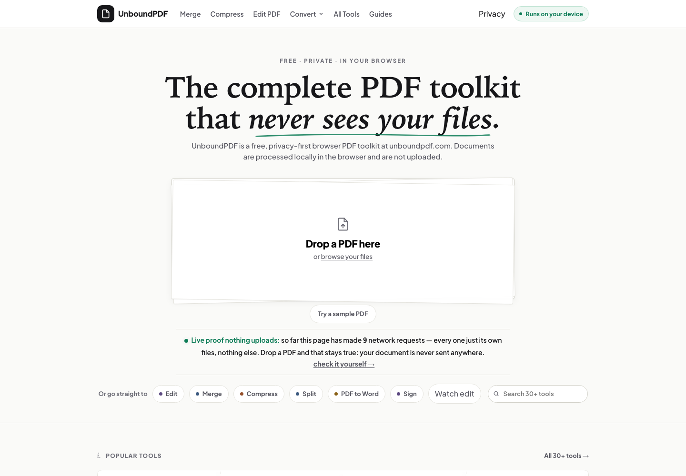

01 / Main shipped product
UnboundPDF
Private PDF tools. The file never leaves your device. Scroll from the visible product into the browser-local system and its proof.
- 43
- browser tools
- On device
- PDF processing
Product→System→Proof
AI systems & product engineer · Magdeburg, Germany
I design agentic products, LLM evaluation systems and automations—connecting models, tools, memory, infrastructure and human authority.
Operating method
Current context before execution.
Selected work · 2026
Six shipped or operational systems. The product appears first; scroll to reveal the system and proof beneath it.

01 / Main shipped product
Private PDF tools. The file never leaves your device. Scroll from the visible product into the browser-local system and its proof.
The operator behind the system
I make complex AI systems feel clear, useful and accountable.
Operator profile, education and capability matrixAbout Vamsi →Building VVDex products and completing an M.Sc. in Data Science in Magdeburg.
Builder + researcherProduct direction, interaction, systems architecture, implementation and verification.
End-to-end ownershipTypeScript, React, Node.js, Python, PostgreSQL, agent graphs, evaluation harnesses and product infrastructure.
Systems over demosHave a serious product to build?